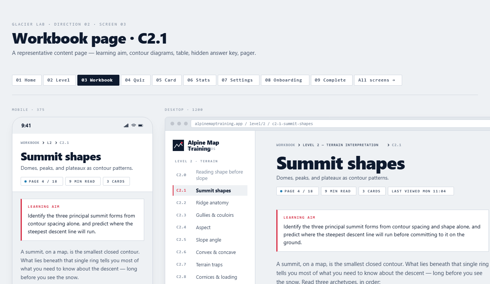

A self-contained folder you hand to a fresh Claude session. It has the 415-page Companion Manual, the exact visual reference for one finished workbook page, a stripped-down template, and a README that's already written as the prompt.
Copy → paste into the next Claude session
I have a Word document and a design reference. Please re-render the document as an HTML workbook in the reference's exact visual style.
Read README.md in this folder first — it's the full spec, including how to parse the .docx, what styles to map where, and the output layout.
Start by parsing the manual and showing me a structured outline of every page before you render anything. Then build index.html and the first content page (B1.1), and pause for feedback before continuing.
Do not paraphrase the manual content. Do not invent new colors, fonts, or components beyond what's in reference/tokens.css and reference/styles.css. Do not redraw figures — extract the originals from word/media/.
The full prompt + spec. How to parse the manual, which Word styles map where, what to produce, what not to do.
The one finished page that defines the look. Mobile + desktop layouts, every component the workbook will need.
Stripped scaffold — every block in the right place with TODO markers. Duplicate this per workbook page.

workbook_recreate_handoff/ manually).B1.1. Batch the rest from there.{kind=link}